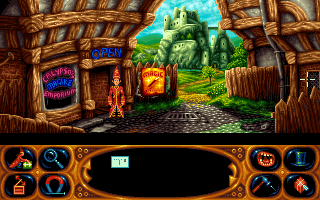

名稱：魔法師西蒙2／頑皮法師2：獅子、男巫、魔衣櫥 (Simon the Sorcerer 2: The Lion, the Wizard and the Wardrobe，英文版) 簡介：Adventure 1995年出品的冒險解謎遊戲 [待補]。  備註：本版為DOS光碟版 保護：無 備註：本遊戲有1996年DOS版與2002年Windows版等兩種光碟。 檔案：simon2-win.rar = Windows光碟1.1版 操作：T = 切換語音／字幕
